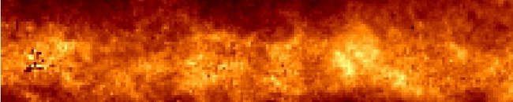

Lifting the Dusty Veil
The Rayleigh-Jeans Color Excess (RJCE) Method for Dereddened Stellar Photometry
Data Products:
Team Members:
- Steven Majewski
- Gail Zasowski
- David Nidever
- Remy Indebetouw
- Michael Skrutskie
Papers:
- Lifting the Dusty Veil with Near- and Mid-Infrared Photometry: I. Description and Applications
of the Rayleigh-Jeans Color Excess Method
Majewski, Zasowski & Nidever (2011), ApJ, 739, 25
- Lifting the Dusty Veil with Near- and Mid-Infrared Photometry: II. A Large-Scale Study of the Galactic Infrared Extinction Law
Zasowski, Majewski, Indebetouw, Meade, Nidever, Patterson, Babler, Skrutskie, Watson, Whitney, & Churchill (2009),
ApJ, 707, 510
- Lifting the Dusty Veil with Near- and Mid-Infrared Photometry: III. Two Dimensional Extinction Maps of the Galactic
Midplane Using the Rayleight-Jeans Color Excess Method
Nidever, Zasowski & Majewski (2012), ApJS, accepted
Last updated on 1/17/2012
By Gail Zasowski